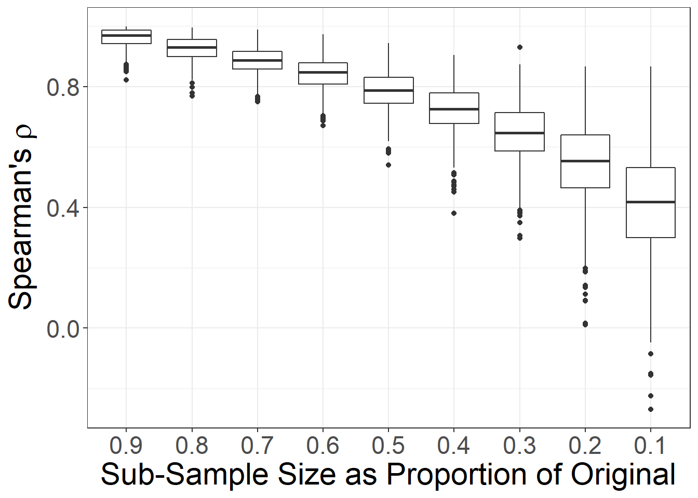
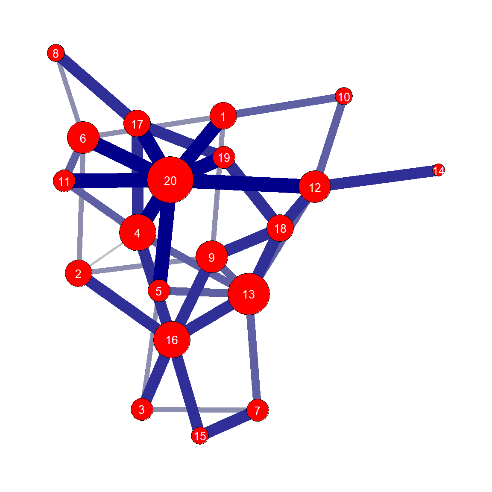
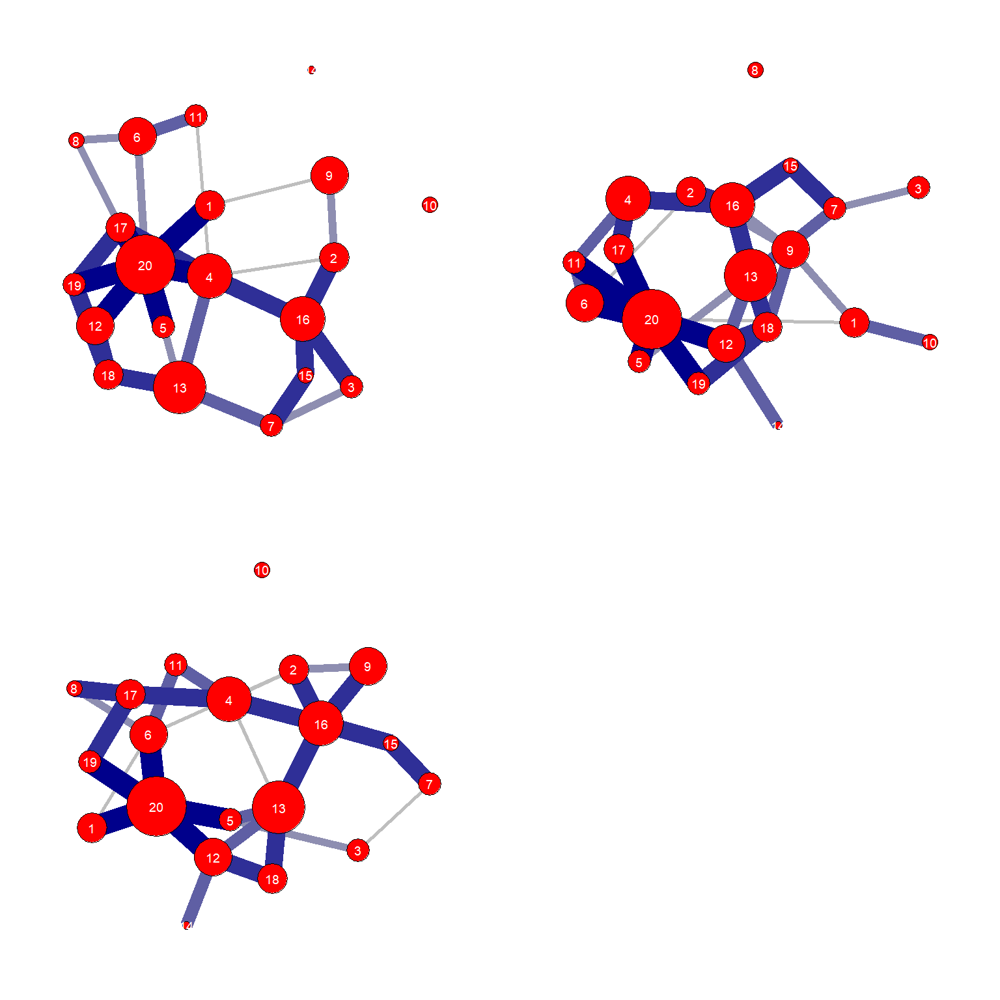

Section 5 Quantifying Uncertainty
This section provides code and examples to accompany Chapter 5 of Brughmans and Peeples (2022) and our discussions of missing and poor quality data in archaeological networks. For many of the other analyses in the book it is possible to use a number of different network software packages to conduct similar analyses. The analyses presented in Chapter 5, however, require the creation of custom scripts and procedures that are only possible in a programming language environment like R. We attempt here to not only provide information on how to replicate the examples in the book but also provide guidance on how you might modify the functions and code provided here for your own purposes.
5.1 A General Approach to Uncertainty
As outlined in the book, our basic approach to quantifying and dealing with uncertainty is to use the sample we have as a means for understanding the robustness or vulnerability of the population from which that sample was drawn to the kinds of variability or perturbations we might expect. The procedures we advocate primarily take the following basic form:
- Define a network based on the available sample, calculate the metrics and characterize the properties of interest in that network.
- Derive a large number of modified samples from the network created in step 1 (or the underlying data) that simulate the potential data problem we are trying to address. For example, if we are interested in the impact of nodes missing at random, we could randomly delete some proportion of the nodes in each sample derived from the network created in step 1.
- Calculate the metrics and characterize the properties of the features of interest in every one of the random samples created in step 2 and assess central tendency (mean, median) and distributional properties (range, standard deviation, distribution shape, etc.) or other features of the output as appropriate.
- Compare the distributions of metrics and properties (at the graph, node, or edge level) from the random samples to the “original” network created in step 1 to assess the potential impacts of the perturbation or data treatment. This comparison between the properties of the network created in step 1 and the distribution of properties created in step 3 will provide information directly relevant to assessing the impact of the kind of perturbation created in step 2 on the original network sample and, by extension, the complete network from which it was drawn.
The underlying assumption of the approach outlined here is that the robustness or vulnerability to a particular perturbation of the observed network data, drawn from a complete network that is unattainable, provides information about the robustness or vulnerability of that unattainable complete network to the same kinds of perturbations. For example, if we are interested in exploring the degree distribution of a network and our sampling experiments show massive fluctuations in that distribution in sub-samples with only small numbers of nodes removed at random, this would suggest that the particular properties of this network are not robust to nodes missing at random for degree calculations and we should not place much confidence in any results obtained from the original sample as indicative of the complete network from which it was drawn. On the other hand, say we instead find that in the resampling experiments the degree distributions in our sub-samples are substantially similar to that of the original network sample even when moderate or large numbers of nodes are removed. In that case, we might conclude that our network structure is such that assessments of degree distribution are robust to node missigness within the range of what we might expect for our original sample in relation to the complete network from which it was drawn. It is important to note, however, that this finding should not be transferred to any other metrics as any given network is likely to be robust to certain kinds of perturbations for certain network metrics, but not to others.
In the sub-sections below we create a basic function to conduct these analyses and show how it can be modified to fit almost any data perturbation you chose to simulate.
5.2 Missing at Random
This sub-section accompanies the discussion of nodes or edges missing at random in Brughmans and Peeples (2022) Chapter 5.3.1. Here we take one interval of the Chaco World ceramic similarity network (ca. A.D. 1050-1100) and simulate the impact of nodes missing at random on network centrality statistics. Download the ceramic similarity adjacency matrix to follow along.
The first thing we need to do is to initialize our required libraries and import the ceramic ware data and convert it into a network object. Here we will once again use the igraph package. For our example here we are using a simple undirected network.
library(igraph)
library(reshape2)
library(ggplot2)
library(ggraph)
library(tnet)
library(ggpubr)
library(dplyr)
library(statnet)
# Import adjacency matrix and covert to network
chaco <- read.csv(file='data/AD1050net.csv',row.names=1)
chaco_net <- igraph::graph_from_adjacency_matrix(as.matrix(chaco), mode="undirected")Now we need to define a function that removes a specified proportion of nodes at random, assesses the specified metric of interest, and compares each sub-sample to the original sample in terms of the rank order correlation (Spearman’s \(\rho\)) among nodes for the metric in question. We have attempted to write this function to be as general as possible so that you can modify it and use it to meet your own needs in your own research. In subsequent steps in this document we will modify this basic function to assess different data perturbations.
5.2.1 Nodes Missing at Random
First, following Chapter 5.3.1, we will assess the robustness of these data to nodes missing at random for betweenness centrality.
The “nodes_missing_at_random_bw” function below requires three specific pieces of information from the user.
- net - You must include a network object in igraph format. The current version expects a simple network but the code could be modified for other types.
- nsim - You must specify the number of simulations to perform. The default is 1000.
- props - Finally, you must specify the proportion of nodes to be retained for each set of nsim runs. This should be provided as a vector of proportions ranging from > 0 to 1. By default, the script will calculate a 90% sub-sample all the way down to a 10% sub-sample at 10% intervals using props=c(0.9,0.8,0.7,0.6,0.5,0.4,0.3,0.2,0.1).
As we said, this function is designed to assess betweenness centrality but if you wish to assess another network metric, you simply need to modify the code in two places as marked below. Let’s initialize the script then take a look at the example from the book first using betweenness centrality and then modifying the code for eigenvector centrality. Note that depending on the size of your network and the number of simulations you specify, this could take from several seconds to several minutes.
To briefly describe how this works, the inner portion of this function contains two nested “for” loops which iterate across all values of “props” and for every simulation 1 to “nsim”. The “sub_samp” object is a vector of random integers based on node ids that determine which nodes will be retained. The “sub_net” object is a subset of the larger graph which includes only those nodes indicated in “sub_samp.” Next, we then calculate betweenness centrality for the “sub_net” object and create a vector of those values called “temp_stats.” Finally, we compare rank order correlation of centrality scores in the “temp_stats” to the “met_orig” which is the vector of values in the original network and add to the output matrix. Once we run the script we can visualize the results.
# Function for assessing the impact of nodes missing at random on betweenness centrality
nodes_missing_at_random_bw <- function(net, nsim=1000, props=c(0.9,0.8,0.7,0.6,0.5,0.4,0.3,0.2,0.1)) {
met_orig <- igraph::betweenness(net) # insert measure of interest here
output <- matrix(NA,nsim,length(props))
colnames(output) <- as.character(props)
for (j in 1:length(props)) {
for (i in 1:nsim) {
sub_samp <- sample(seq(1,vcount(net)), size=round(vcount(net)*props[j], 0))
sub_net <- igraph::induced_subgraph(net, sort(sub_samp))
temp_stats <- igraph::betweenness(sub_net) # insert measure of interest here (same as above)
output[i,j] <- suppressWarnings(cor(temp_stats, met_orig[sort(sub_samp)], method='spearman'))
}
}
return(output)
}
# Run the function
set.seed(4561)
bw_test <- nodes_missing_at_random_bw(net=chaco_net, nsim=1000, props=c(0.9,0.8,0.7,0.6,0.5,0.4,0.3,0.2,0.1))
# visuzlize the results as a boxplot using ggplot
df <- melt(as.data.frame(bw_test)) # melt wide data format into long data format
ggplot(data=df) +
geom_boxplot(aes(x=variable, y=value)) +
xlab("Sub-Sample Size as Proportion of Original") +
ylab(expression("Spearman's"~rho)) +
theme_bw() +
theme(axis.text.x=element_text(size=rel(2)),axis.text.y=element_text(size=rel(2)),
axis.title.x = element_text(size=rel(2)),axis.title.y = element_text(size=rel(2)),
legend.text = element_text(size=rel(1)))
Now let’s run the same function for eigenvector centrality, this time using the default arguments in the function we created rather than calling them directly. Note that we modified two lines of code to change igraph::betweenness(net) to igraph::eign_centrality(net)$vector. Because the eigen_centrality function outputs more than just the centrality values, we need to include the vector call.
# Function for assessing the impact of nodes missing at random on betweenness centrality
nodes_missing_at_random_ev <- function(net, nsim=1000, props=c(0.9,0.8,0.7,0.6,0.5,0.4,0.3,0.2,0.1)) {
met_orig <- igraph::eigen_centrality(net)$vector # insert measure of interest here
output <- matrix(NA,nsim,length(props))
colnames(output) <- as.character(props)
for (j in 1:length(props)) {
for (i in 1:nsim) {
sub_samp <- sample(seq(1,vcount(net)), size=round(vcount(net)*props[j], 0))
sub_net <- igraph::induced_subgraph(net, sort(sub_samp))
temp_stats <- igraph::eigen_centrality(sub_net)$vector # insert measure of interest here (same as above)
output[i,j] <- suppressWarnings(cor(temp_stats, met_orig[sort(sub_samp)], method='spearman'))
}
}
return(output)
}
# Run the function
set.seed(5609)
ev_test <- nodes_missing_at_random_ev(net=chaco_net)
# visuzlize the results as a boxplot
df <- melt(as.data.frame(ev_test)) # melt wide data format into long data format
ggplot(data=df) +
geom_boxplot(aes(x=variable, y=value)) +
xlab("Sub-Sample Size as Proportion of Original") +
ylab(expression("Spearman's"~rho)) +
theme_bw() +
theme(axis.text.x=element_text(size=rel(2)),axis.text.y=element_text(size=rel(2)),
axis.title.x = element_text(size=rel(2)),axis.title.y = element_text(size=rel(2)),
legend.text = element_text(size=rel(1)))
5.2.2 Edges Missing at Random
We can also modify the function we defined above a little more to assess the impacts of edges missing at random. In this case we assess the impact of edges missing at random on degree centrality. We changed the same two lines “met_orig” and “temp_stats” to calculate degree and we also had to slightly change the lines beginning with “sub_samp,” “sub_net,” and “output[i,j]” to expect variation in edges rather than nodes. Specifically, in the line that starts with “sub_samp” we change “vcount” to “ecount” to get a sample of edges rather than nodes (vertices). In the next line we use that “sub_samp” object to “delete_edges” for all not in that sub sample. Finally, we remove the brackets after “met_orig” since all nodes are retained in this example.
# Function for assessing the impact of edges missing at random on degree centrality
edges_missing_at_random_dg <- function(net, nsim=1000, props=c(0.9,0.8,0.7,0.6,0.5,0.4,0.3,0.2,0.1)) {
met_orig <- igraph::degree(net) # insert measure of interest here
output <- matrix(NA,nsim,length(props))
colnames(output) <- as.character(props)
for (j in 1:length(props)) {
for (i in 1:nsim) {
sub_samp <- sample(seq(1,ecount(net)), size=round(ecount(net)*props[j], 0)) # modify for edges
sub_net <- igraph::delete_edges(net, which(!(seq(1,ecount(net)) %in% sub_samp))) # modify for edges
temp_stats <- igraph::degree(sub_net) # insert measure of interest here (same as above)
output[i,j] <- suppressWarnings(cor(temp_stats, met_orig, method='spearman')) # modify for edges
}
}
return(output)
}
# Run the function
set.seed(5609)
dg_edge_test <- edges_missing_at_random_dg(net=chaco_net)
# visuzlize the results as a boxplot
df <- melt(as.data.frame(dg_edge_test)) # melt wide data format into long data format
ggplot(data=df) +
geom_boxplot(aes(x=variable, y=value)) +
xlab("Sub-Sample Size as Proportion of Original") +
ylab(expression("Spearman's"~rho)) +
theme_bw() +
theme(axis.text.x=element_text(size=rel(2)),axis.text.y=element_text(size=rel(2)),
axis.title.x = element_text(size=rel(2)),axis.title.y = element_text(size=rel(2)),
legend.text = element_text(size=rel(1)))
5.3 Assessing Indivdiual Nodes/Edges
This sub-section follows along with Chapter 5.3.2 in Brughmans and Peeples (2022). Here we will once again use the Cibola technological similarity network to make this assessment. This script is similar to that used above but instead of outputting correlation coefficients it outputs the specific rank order of the node in question.
The function requires four pieces of information from the user:
- net - An igraph network object. Again this is currently set up for simple networks but could easily be modified.
- target - The name of the target node you wish to assess
- prop - The proportion of nodes you wish to retain in the test.
- nsim - The number of simulations. The default is 1000.
Briefly how this function works is it first determines which node number corresponds with the “target” you wish to assess and creates a sub_sample that retains that target node. A subgraph is then induced (sub_net) and the metric of interest is calculated (betweenness in this case). The “output” object is a vector that records the specific rank order that the node in question fell in in terms of the metric in question.
Use these data to follow along.
# Read in edgelist file as dataframe and create network object
Cibola_edgelist <- read.csv(file="data/Cibola_edgelist.csv", header=TRUE)
Cibola_net <- igraph::graph_from_edgelist(as.matrix(Cibola_edgelist), directed=FALSE)
# Function for assessing the impact of rank order correlation in betweenness centrality to nodes missing at random
individual_nodes_bw <- function(net, target, prop, nsim=1000) {
output <- NULL
for (i in 1:nsim) {
target_number <- which(V(net)$name == target)
sub_samp <- sample(setdiff(1:vcount(net),target_number), size=round(vcount(net)* (1-prop), 0))
sub_net <- igraph::induced_subgraph(net, sort(setdiff(1:vcount(net),sub_samp)))
temp_stats <- igraph::betweenness(sub_net)
output[i] <- which(names(sort(temp_stats, decreasing=TRUE))==target)
}
return(output)
}
# Run the function
set.seed(52793)
GR <- individual_nodes_bw(net=Cibola_net, target="Garcia Ranch", prop=0.8, nsim=1000)
# Visualize the results
df <- as.data.frame(GR)
colnames(df) <- "RankOrder"
ggplot(df, aes(x=RankOrder)) +
geom_bar() +
theme_bw() +
labs(title=" ", x ="Rank Order", y = "Count")+
theme(axis.text.x=element_text(size=rel(2)),axis.text.y=element_text(size=rel(2)),
axis.title.x = element_text(size=rel(2)),axis.title.y = element_text(size=rel(2)))
5.4 Missing Due to Biased Sampling
This sub-section follows along with Brughmans and Peeples (2022) Chapter 5.3.3. There are many situations where we are interested in modeling situations where the data that are missing are not missing at random but instead are influenced by some biased sampling process. For example, say we have a study area where there have been lots of general reconnaissance surveys that have recorded most of the large sites but few full coverage surveys that have captured smaller sites. In that case, we may wish to model missingness such that small sites would more likely be missing than large sites.
We illustrate this approach using the co-authorship network example presented in the book. In this case we start with an incidence matrix of publications and authors and we want to assess the potential impact of missing data. Since we gathered these data from digital repositories and citations, it is likely that we are missing some publication and it is reasonable to assume that we would be more likely to miss older publications than newer ones given the inclusion of newer publications in searchable digital indexes. Thus, in this example we want to assess missingness such that newer publications are more likely to be retained than older ones in our sample. We compare this to missing at random to assess how these results relate to one another.
First we need to provide two data files. The first is the bibliographic attribute data which includes date, publication type, and other information on each publication designated by a unique identifier. The second is an incidence matrix of publications denoted by unique identifier and authors. We read this into R and then create an adjaceny matrix of author to author connections using matrix algebra, convert it into a igraph network object and then calculate betweenness centrality for all nodes. We then provide a simple network node link diagram to visualize these data.
# Read in publication and author attribute data
bib <- read.csv('data/biblio_attr.csv')
# Read in incidence matrix of publication and author data
bib_dat <- as.matrix(read.csv('data/biblio_dat.csv',header=T,row.names=1))
# Create adjacency matrix from incidence matrix using matrix algebra
bib_adj <- t(bib_dat) %*% bib_dat
# Convert to igraph network object removing self loops (diag=FALSE)
bib_net <- igraph::graph_from_adjacency_matrix(bib_adj, mode="undirected", diag=FALSE)
# Calculate Betweenness Centrality
bw_all <- igraph::betweenness(bib_net)
# Plot network with nodes scaled based on betweenness
set.seed(346)
ggraph(bib_net, layout = "fr") +
geom_edge_link0(width = 0.2) +
geom_node_point(shape = 21, aes(size = bw_all*5), fill='gray', alpha=0.75) +
theme_graph()+
theme(legend.position = "none")
With these network objects created we then need to modify our “nodes_missing_at_random_bw” function from above to the specific nature of our question and these data. Indeed since our example here relies on an incidence matrix that includes information defined across multiple publications, we have to me additional changes to the structure of that function.
We create a “nodes_missing_biased_bw” function below that requires five specific pieces of information from the user.
- net - You must include a network object in igraph format. The current version expects a simple network but the code could be modified for other types.
- inc - You must also include an incidence matrix (as an R matrix object) which describes the relationships between publications and authors
- nsim - You must specify the number of simulations to perform. The default is 1000.
- props - Finally, you must specify the proportion of nodes to be retained for each set of nsim runs. This should be provided as a vector of proportions ranging from > 0 to 1. By default, the script will calculate a 90% sub-sample all the way down to a 10% sub-sample at 10% intervals using props=c(0.9,0.8,0.7,0.6,0.5,0.4,0.3,0.2,0.1).
- lookup_dat - Finally, you must provide the lookup data which connects the publication key code to the year as that is the basis of our simulation. Note that this function is designed to work with a lookup file that has column names exactly as shown here (“Publication.Year”, “prob”, “Key”) and this would need to be modified to work with data with different columns.
The first step is to create a new column in the lookup file called “prob” that defines the probability that a node will be retained in each random sub-sample. To do this we simply take the vector of publication years and rescale them such that the maximum value (most recent publication) equals 1 and older publications are less than 1. This will mean that older publications will more often be removed in our random sub-samples than newer ones.
# Create a dataframe of all unique combinations of publication code and year from attributes data
lookup <- unique(bib[,c(1,4)])
# Assign a probability for a publication to be retained inverse to the year it was published
lookup$prob <- (lookup$Publication.Year-min(lookup$Publication.Year))/
(max(lookup$Publication.Year)-min(lookup$Publication.Year))
head(lookup)## Key Publication.Year prob
## 1 FUV8A7JK 2014 0.9583333
## 2 C7MRVHWA 2013 0.9375000
## 3 3EG6T4P6 1991 0.4791667
## 4 I3UPKTTM 2014 0.9583333
## 19 9ZVD38UW 2001 0.6875000
## 20 XRWFR6XU 1977 0.1875000Next we create a function that wraps all of this together. This is similar to the “nodes_missing_at_random_bw” function with a few key differences. Specifically:
- The line starting with “sub_samp” includes an additional argument “prob” which is assigned to the probability variable we created in the last step such that higher probability (newer) publications will be more likely to be retained.
- Next, since the network of co-authorship includes connections that could be made by more than one publication we actually need to sub-sample from the incidence matrix. The line begining with “sub” finds all publications that were retained in the “sub_samp” object.
- Next we convert “sub” to an adjacency matrix called “sub_adj” using matrix algebra and then a network object called “sub_net”
- Finally, we calculate betweenness centrality and rank order correlations and put the results in the output object.
Here we are going to run the function for nsim=1000 and for 3 sampling fractions (0.9, 0.8, 0.7).
# Function for assessing the impact of data missing due to biased process on betweenness centrality
nodes_missing_biased_bw <- function(net, inc, nsim=1000, props=c(0.9,0.8,0.7,0.6,0.5,0.4,0.3,0.2,0.1), lookup_dat) {
met_orig <- igraph::betweenness(net) # insert measure of interest here
output <- matrix(NA,nsim,length(props))
colnames(output) <- as.character(props)
for (j in 1:length(props)) {
for (i in 1:nsim) {
sub_samp <- sample(seq(1,nrow(lookup_dat)), size=round(nrow(lookup_dat)*props[j], 0), prob=lookup_dat$prob) # added prob argument
sub <- which(rownames(bib_dat) %in% lookup$Key[sub_samp])
sub_adj <- t(inc[sub,]) %*% inc[sub,]
sub_net <- igraph::graph_from_adjacency_matrix(sub_adj)
temp_stats <- igraph::betweenness(sub_net) # insert measure of interest here (same as above)
output[i,j] <- suppressWarnings(cor(temp_stats, met_orig, method='spearman'))
}
}
return(output)
}
# Run fuction
set.seed(4634)
bib_bias <- nodes_missing_biased_bw(net=bib_net, inc=bib_dat, lookup_dat=lookup, props=c(0.9,0.8,0.7))
head(bib_bias)## 0.9 0.8 0.7
## [1,] 0.9327931 0.9314217 0.8433757
## [2,] 0.9200489 0.9818085 0.7750152
## [3,] 0.9999088 0.9763457 0.9079782
## [4,] 1.0000000 0.9311525 0.7161128
## [5,] 0.9779243 0.8115974 0.8307865
## [6,] 0.9778791 0.9998792 0.7273099With this in place, we now need a function that deals with our incidence matrix data but simulates missigness at random. This only requires a single argument to change from our last function. Specifically, all we need to do is remove the “prob=lookup_dat$prob” argument from the line beginning with “sub_samp” and we’re ready to go.
# Function for assessing the impact of nodes missing at random on betweenness centrality
nodes_missing_at_random_inc_bw <- function(net, inc, nsim=1000, props=c(0.9,0.8,0.7,0.6,0.5,0.4,0.3,0.2,0.1), lookup_dat) {
met_orig <- igraph::betweenness(net) # insert measure of interest here
output <- matrix(NA,nsim,length(props))
colnames(output) <- as.character(props)
for (j in 1:length(props)) {
for (i in 1:nsim) {
sub_samp <- sample(seq(1,nrow(lookup_dat)), size=round(nrow(lookup_dat)*props[j], 0)) # removed prob argument
sub <- which(rownames(bib_dat) %in% lookup$Key[sub_samp])
sub_adj <- t(inc[sub,]) %*% inc[sub,]
sub_net <- igraph::graph_from_adjacency_matrix(sub_adj)
temp_stats <- igraph::betweenness(sub_net) # insert measure of interest here (same as above)
output[i,j] <- suppressWarnings(cor(temp_stats, met_orig, method='spearman'))
}
}
return(output)
}
# Run the function
set.seed(4363)
bib_rand <- nodes_missing_at_random_inc_bw(net=bib_net, inc=bib_dat, lookup_dat=lookup, props=c(0.9,0.8,0.7))
head(bib_rand)## 0.9 0.8 0.7
## [1,] 0.9805339 0.9474142 0.8404082
## [2,] 0.9551694 0.9539318 0.8840402
## [3,] 0.9582099 0.8897556 0.9311734
## [4,] 0.9763482 0.8442237 0.7942490
## [5,] 0.8576312 0.8242232 0.8278691
## [6,] 1.0000000 0.8433042 0.8883410Now we can combine the results into a single dataframe and plot them as paired boxplots for comparison.
df1 <- melt(bib_rand) # convert wide data to long format
df2 <- melt(bib_bias) # convert wide data to long format
# Add a variable denoting which sample it came from
df1$Treatment <- rep("Random", nrow(df1))
df2$Treatment <- rep("Biased", nrow(df2))
# Bind into a single dataframe, convert sampling faction to factor and change order of levels for plotting
df <- rbind(df1,df2)
df$Var2 <- as.factor(df$Var2)
df$Var2 <- factor(df$Var2, levels = c("0.9", "0.8", "0.7"))
# Plot the results
ggplot(data=df) +
geom_boxplot(aes(x=Var2, y=value, fill=Treatment)) +
scale_fill_manual(values=c("white", "gray")) +
xlab("Sub-Sample Size as Proportion of Original") +
ylab(expression("Spearman's"~rho)) +
theme_bw() +
theme(axis.text.x=element_text(size=rel(2)),axis.text.y=element_text(size=rel(2)),
axis.title.x = element_text(size=rel(2)),axis.title.y = element_text(size=rel(2)),
legend.text = element_text(size=rel(2)))
5.5 Edge Probability Modeling
In this section we take inspiration from some recent work in the area of “Dark Networks” (see Everton 2012). In this field, a number of methods have recently been developed that allow us to more directly incorporate our assessments of the reliability of specific edges into our analysis. This can be done in a number of different ways. Perhaps the most common approach for networks based on data gathered from intelligence sources (such as studies of terrorist networks) is to qualitatively assign different levels of confidence to ties between pairs of actors using an ordinal scale determined based on the source of the information (reliable, usually reliable,… unreliable). This ordinal scale of confidence can then be converted into a probability (from 0 to 1) and that probability value could be used to inform the creation of a range of “possible” networks given the underlying data.
We are not aware of any archaeological examples where edges have been formally/qualitatively assigned “confidence levels” in exactly this way, but we think there are potential applications of this method. For example, we could define a network where we assign a low probability of a tie between two archaeological sites if they share an import from a third site/region and a higher probability for a tie between two sites if they share imports from each others region. Importantly, such methods can be used to combine information from different sources into a single assessment of the likelihood of connection.
Since we do not have any data structured in exactly this way, we will again simulate a small example and then analyze it. Let’s create a network with ties associated with “probabilities” and the plot it. We use the “rg_w” function within the tnet package to simulate a random weighted network in this way.
# Create random weighted network edgelist with weights from list
sim_edge <- as.matrix(rg_w(nodes=20,arcs=80,weights=c(0.2,0.4,0.6,0.8,1),directed=F,seed=41267))
# Create network object and assign edge weights and node names
sim_net <- igraph:: graph_from_edgelist(sim_edge[,1:2])
E(sim_net)$weight <- sim_edge[order(sim_edge[,3]),3]
V(sim_net)$name <- seq(1:20)
# Create color ramp palette
edge_cols <- colorRampPalette(c('gray','darkblue'))(5)
# Plot the resulting network
set.seed(4364672)
ggraph(sim_net, layout = "fr") +
geom_edge_link0(aes(width = E(sim_net)$weight*5), edge_colour=edge_cols[E(sim_net)$weight*5], show.legend=F) +
geom_node_point(shape = 21, size=igraph::degree(sim_net)+3, fill='red') +
geom_node_text(aes(label = as.character(name)), col='white', size=3.5, repel=F) +
theme_graph()
In the next chunk of code we define a function that iterates over every edge in the simulated network we just created and defines each edge as either present or absent using a simple random binomial with the probability set by the edge weight as described above. The output of this function (edge_liklihood) is a list object that contains “nsim” igraph network objects that are candidate networks of the original.
Next, in order to extract values of interest from these candidate networks, we created another function called “compile_stat” that could be modified for any measure of interest. This function iterates over all “nsim” networks in the “net_list” list object and calculates “degree” in this case returning the results as a simple matrix. It is then possible to compare things like average degree or the distribution of degree for particular nodes across all of the canddiate networks.
# Define function for assessing and retaining edges based on edge weight probabilities
edge_prob <- function(net, nsim) {
net_list <- list()
for (i in 1:nsim) {
sub_set <- NULL
for (j in 1:ecount(net)) {
temp <- rbinom(1,1,prob=sim_edge[j,3])
if (temp==1) {sub_set <- c(sub_set,j)}
}
net_list[[i]] <- igraph::delete_edges(net, which(!(seq(1,ecount(net)) %in% sub_set)))
}
return(net_list)
}
# Define function for assessing statistic of interest
compile_stat <- function(net_list, nsim) {
out <- matrix(NA,length(net_list),nsim)
for (i in 1:nsim) {
out[,i] <- igraph::degree(net_list[[i]])} # degree could be changed to any other igraph function that outputs a vector of length vcount
return(out)
}Now we run the edge_prob function for nsim=1000 and display a few candidate networks.
EL_test <- edge_prob(sim_net, nsim=1000)
set.seed(9651)
comp1 <- ggraph(EL_test[[1]], layout = "fr") +
geom_edge_link0(aes(width = E(EL_test[[1]])$weight), edge_colour=edge_cols[E(EL_test[[1]])$weight*5], show.legend=F) +
geom_node_point(shape = 21, size=igraph::degree(sim_net), fill='red') +
geom_node_text(aes(label = as.character(name)), col='white', size=2.5, repel=F) +
theme_graph()
comp2 <- ggraph(EL_test[[2]], layout = "fr") +
geom_edge_link0(aes(width = E(EL_test[[2]])$weight), edge_colour=edge_cols[E(EL_test[[2]])$weight*5], show.legend=F) +
geom_node_point(shape = 21, size=igraph::degree(sim_net), fill='red') +
geom_node_text(aes(label = as.character(name)), col='white', size=2.5, repel=F) +
theme_graph()
comp3 <- ggraph(EL_test[[3]], layout = "fr") +
geom_edge_link0(aes(width = E(EL_test[[3]])$weight), edge_colour=edge_cols[E(EL_test[[3]])$weight*5], show.legend=F) +
geom_node_point(shape = 21, size=igraph::degree(sim_net), fill='red') +
geom_node_text(aes(label = as.character(name)), col='white', size=2.5, repel=F) +
theme_graph()
ggarrange(comp1, comp2, comp3)
We then use the compile_stat function to assess degree centrality for one particular node, displaying a histogram of values with mean indicated.
dg_stat <- compile_stat(EL_test, nsim=1000)
dg_20 <- dg_stat[20,]
tibble(val = dg_20) %>%
ggplot(., aes(val)) +
geom_histogram(binwidth = 1) +
xlab("Degree Centrality of Node 20") +
geom_vline(xintercept = mean(dg_20), col='red')
5.6 Small or Variable Sample Size
This section follows Brughmans and Peeples (2022) Chapter 5.3.5 to provide an example of how you can use the simulation approach outlined here to assess sampling variability in the data underlying archaeological networks. In this example, we use apportioned ceramic frequency data from the Chaco World portion of the Southwest Social Networks database. You can download the data here to follow along.
The goal of this sub-section is to illustrate how you can use a bootstrappping approach to assess variability in network properties based on sampling error in the raw data underlying archaeological networks. In our example based on ceramic similarity networks here this involves creating a large number of random replicates of each row of our raw ceramic data with sample size held constant (as the observed sample size for that site) and with the probabilities that a given sherd will be a given type determined by the underlying multinomial frequency distribition of types at that site. In other words, we pull a bunch of random samples from the site with the probability that a given sample is a given type determined by the relative frequency of that type in the actual data. Once this procedure has been completed, we can then assess centrality metrics or any other graph, node, or edge level property and determine the degree to which absolute values and relative ranks are potentially influenced by sampling error.
There are many ways to set up such a resampling procedure and many complications (for example, how do we deal with limited diversity of small samples?). For the purposes of illustration here, we will implement a very simple procedure where we simply generate new samples of a fixed size based on our observed data and determine the degree to which our network measures are robust to this perturbation. In the chunk of code below we create 1000 replicates based on our original ceramic data.
The following chunk of code first reads in the ceramic data, converts it to a Brainerd-Robinson similarity matrix and then defines a function called “sampling_error_sim” which creates “nsim” random replciates of the ceramic data, converts them to similarity matrices, and ouputs those results as a list object.
# Read in raw ceramic data
ceramic <- read.csv(file="data/AD1050cer.csv", header=TRUE, row.names=1)
# Convert to proportion
ceramic_p <- prop.table(as.matrix(ceramic), margin = 1)
# Convert to Brainerd-Robinson similarity matrix
ceramic_BR <- (2-as.matrix(vegan::vegdist(ceramic_p, method='manhattan')))/2
# Create function for assessing impact of sampling error on weighted degree for similarity network
sampling_error_sim <- function(cer, nsim=1000) {
sim_list <- list()
for (i in 1:nsim) {
data_sim <- NULL
# the for-loop below creates a random multinomial replicate of the ceramic data
for (j in 1:nrow(cer)) {
data_sim <- rbind(data_sim,t(rmultinom(1,rowSums(cer)[j],prob=cer[j,])))
}
# Convert simulated data to proportion, create similarity matrix, calculate degree, and assess correlation
temp_p <- prop.table(as.matrix(data_sim), margin=1)
sim_list[[i]] <- (2-as.matrix(vegan::vegdist(temp_p, method='manhattan')))/2
}
return(sim_list)
}The following chunk of code runs the “sampling_error_sim” function defined above for our Chaco ceramic data and then defines a new fucntion called “sim_cor” which takes the output of “sampling_error_sim” and the original ceramic similarity matrix (ceramic_BR) and calculates weighted degree centrality and the Speraman’s \(\rho\) correlations between the original similarity matrix and each random replicate. This “sim_cor” script could be modified to use any network metric that outputs a vector. Once these results are returned we visualize the results as a histogram.
Note that this could take several seconds to a few minutes depending on your computer.
set.seed(4634)
sim_nets <- sampling_error_sim(cer=ceramic, nsim=1000)
sim_cor <- function(sim_nets, sim) {
dg_orig <- rowSums(sim) # change this line to use a different metric
dg_cor <- NULL
for (i in 1:length(sim_nets)) {
dg_temp <- rowSums(sim_nets[[i]]) # change this line to use a different metric
dg_cor[i] <- suppressWarnings(cor(dg_orig, dg_temp, method="spearman"))
}
return(dg_cor)
}
dg_cor <- sim_cor(sim_nets, ceramic_BR)
df <- as.data.frame(dg_cor)
ggplot(df, aes(x=dg_cor)) +
geom_histogram(bins=100, color='white',fill='black') +
theme_bw() +
scale_x_continuous(name='Correlation in Degree Centraility',limits=c(0.9,1)) +
theme(axis.text.x=element_text(size=rel(1.5)),axis.text.y=element_text(size=rel(1.5)),
axis.title.x = element_text(size=rel(1.5)),axis.title.y = element_text(size=rel(1.5)),
legend.text = element_text(size=rel(1.5)))
As described in Chapter 5.3.5, in some cases we want to observe patterns of variation due to sampling error for individual sites or sets of sites. In the next chunk of code we illustrate how to produce figure 5.14 from the Brughmans and Peeples (2022) book. Specifically, this plot consists of a series of line plots where the x axis represents each node in the network ordered by degree centrality in the original observed network. For each node there is a vertical line which represents the 95% confidence interval around degree across the “nsim” random replicates produced to evaluate sampling error. The blue line represents degree in the original network and the red line represents median degree in the resampled networks.
To create this plot, we first iterate through every object in “sim_nets” and calculate weighted degree centrality and then add that to a two-column matrix along with a node id. Once we have done this for all simulations, we use the “summarise” function to calculate the Mean and
# Create data frame containing degree and site id for nsim random similarity matrices
df <- matrix(NA,1,2) # define empty matrix
# calculate degree centrality for each random run and bind in matrix along with id
for(i in 1:length(sim_nets)) {
temp <- cbind(seq(1,nrow(sim_nets[[i]])),rowSums(sim_nets[[i]]))
df <- rbind(df,temp)
}
df <- as.data.frame(df[-1,]) # remove first row in initial matrix
colnames(df) <- c("site", "degree") # add column names
# Use summarise function to create median, confidence intervals, and other statistics for degree by site.
out <- df%>%
group_by(site)%>%
summarise(Mean=mean(degree), Median=median(degree), Max=max(degree), Min=min(degree), Conf=sd(degree)*1.96)
out$site <- as.numeric(out$site)
out <- out[order(rowSums(ceramic_BR)),]
# Create dataframe of degree centrality for the original ceramic similarity matrix
dg_wt <- as.data.frame(rowSums(ceramic_BR))
colnames(dg_wt) <- "dg.wt"
# Plot the results
ggplot() +
geom_line(data=out, aes(x=reorder(site,Median), y=Median, group=1), col='red', lwd=1.5, alpha=0.5) +
geom_errorbar(data=out, aes(x = reorder(site,Median), ymin = Median-Conf, ymax = Median+Conf)) +
geom_path(data=sort(dg_wt), aes(x=order(dg.wt), y=dg.wt), col='blue', lwd=1.5, alpha=0.5) +
theme_bw() +
ylab('Degree') +
scale_x_discrete(name='Sites in Rank Order of Degree') +
theme(axis.text.x=element_blank(),axis.ticks.x=element_blank(), axis.text.y=element_text(size=rel(2)),
axis.title.x = element_text(size=rel(2)),axis.title.y = element_text(size=rel(2)),
legend.text = element_text(size=rel(2)))